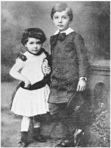

Maja, age 3, and Albert Einstein, 5
He was slow in learning how to talk. “My parents were so worried,” he later recalled, “that they consulted a doctor.” Even after he had begun using words, sometime after the age of 2, he developed a quirk that prompted the family maid to dub him “der Depperte,” the dopey one, and others in his family to label him as “almost backwards.” Whenever he had something to say, he would try it out on himself, whispering it softly until it sounded good enough to pronounce aloud. “Every sentence he uttered,” his worshipful younger sister recalled, “no matter how routine, he repeated to himself softly, moving his lips.” It was all very worrying, she said. “He had such difficulty with language that those around him feared he would never learn.”1
爱因斯坦学习说话很晚。他后来回忆说：“当时我的父母很发愁，还去找了医生。”两岁多时，他好不容易能说出些单词了，却又染上了一个怪毛病，就因为这个，家里的女仆甚至给他起了个“笨瓜”（（derDepperte）的绰号，家里人则说他“发育比较迟缓”。原来，他想说话的时候，总要先轻声地讲给自己听，直到差不多了才会大声说出来。他的妹妹后来回忆说：“他说出每一句话，不论多么平常，都要嚅动着嘴唇，喃喃地自言自语。”这的确令人担忧，“他学习语言相当吃力，身边的人担心他永远都学不会。”
His slow development was combined with a cheeky rebelliousness toward authority, which led one schoolmaster to send him packing and another to amuse history by declaring that he would never amount to much. These traits made Albert Einstein the patron saint of distracted school kids everywhere.2 But they also helped to make him, or so he later surmised, the most creative scientific genius of modern times.
他不仅发育迟缓，而且还顶撞老师，不服从权威，以致有老师曾让他收拾东西走人，还有一位老师则断言他永远都不会有出息。今天看来，这不禁令人莞尔。这些性格特点不仅使爱因斯坦成为世界上调皮贪玩学生的守护神，而且也成就了这位现时代最具创造力的科学天才。
His cocky contempt for authority led him to question received wisdom in ways that well-trained acolytes in the academy never contemplated. And as for his slow verbal development, he came to believe that it allowed him to observe with wonder the everyday phenomena that others took for granted. “When I ask myself how it happened that I in particular discovered the relativity theory, it seemed to lie in the following circumstance,” Einstein once explained. “The ordinary adult never bothers his head about the problems of space and time. These are things he has thought of as a child. But I developed so slowly that I began to wonder about space and time only when I was already grown up. Consequently, I probed more deeply into the problem than an ordinary child would have.”3
他对权威的蔑视使他很容易对一般人的看法提出质疑，而在那些训练有素的学院派看来，他所做的许多质疑简直就是痴人说梦。至于语言发育迟缓，他认为这使他可以带着好奇去观察被认为是理所当然的日常现象。“我也问过自己，为什么偏偏是我发现了相对论，我以为事情大概是这样的，”爱因斯坦曾经这样解释道，“一般成年人从不为时间和空间问题操心，他们认为只有小孩子才会想这些事情。但我发育非常迟缓，直到长大之后才开始对时间和空间感到好奇。所以我对这个问题的思考要比别的孩子深入一些。”
Einstein’s developmental problems have probably been exaggerated, perhaps even by himself, for we have some letters from his adoring grandparents saying that he was just as clever and endearing as every grandchild is. But throughout his life, Einstein had a mild form of echolalia, causing him to repeat phrases to himself, two or three times, especially if they amused him. And he generally preferred to think in pictures, most notably in famous thought experiments, such as imagining watching lightning strikes from a moving train or experiencing gravity while inside a falling elevator. “I very rarely think in words at all,” he later told a psychologist. “A thought comes, and I may try to express it in words afterwards.”4
爱因斯坦的发育问题也许被夸大了，甚至他本人都可能有所夸张，因为他的祖父母曾经写信说，他和所有孩子一样聪明可爱。但爱因斯坦终生都有轻度的言语模仿症，他经常会把句子自言自语地重复两三遍，特别是当他觉得这个句子有意思时。他一般倾向于以图像的方式进行思考，最典型的莫过于那些著名的思想实验，比如想象从火车上发出的闪光，或者在下降的升降机中体验引力。“我很少用语词进行思考，”他后来对一位心理学家说，“只有在想法产生之后，我才可能试着用语词来表达它。”
Einstein was descended, on both parents’ sides, from Jewish trades-men and peddlers who had, for at least two centuries, made modest livings in the rural villages of Swabia in southwestern Germany. With each generation they had become, or at least so they thought, increasingly assimilated into the German culture that they loved. Although Jewish by cultural designation and kindred instinct, they displayed scant interest in the religion or its rituals.
爱因斯坦祖上均为犹太商贩。200多年来，他们一直在德国西南部的施瓦本乡村过着深居简出的生活。随着时光的流逝，他们越来越多地融入了自己更为欣赏的德国文化，至少他们是这样认为的。虽然从文化血统上来说仍然是犹太人，但他们对犹太教及其宗教仪式并不很感兴趣。
Einstein regularly dismissed the role that his heritage played in shaping who he became. “Exploration of my ancestors,” he told a friend late in life, “leads nowhere.”5 That’s not fully true. He was blessed by being born into an independent-minded and intelligent family line that valued education, and his life was certainly affected, in ways both beautiful and tragic, by membership in a religious heritage that had a distinctive intellectual tradition and a history of being both outsiders and wanderers. Of course, the fact that he happened to be Jewish in Germany in the early twentieth century made him more of an outsider, and more of a wanderer, than he would have preferred—but that, too, became integral to who he was and the role he would play in world history.
爱因斯坦曾多次否认传统对他的前途产生过影响。他晚年对一个朋友说：“研究我的祖上没有什么用处。”这样说并非完全正确。他出生在一个思想开明的重视教育的家庭，这是他的幸运。犹太教有着独特的思想传统，它的历史可以说是由局外人和流浪者写成的，这一切对他的生活当然会有影响，尽管影响的方式可能有好有坏。当然，他碰巧出生在20世纪初的德国，从而更是一个局外人和流浪者，这也许有违他愿，但这一切都决定了他的身份以及在世界历史上将要扮演的角色。
Einstein’s father, Hermann, was born in 1847 in the Swabian village of Buchau, whose thriving Jewish community was just beginning to enjoy the right to practice any vocation. Hermann showed “a marked inclination for mathematics,”6 and his family was able to send him seventy-five miles north to Stuttgart for high school. But they could not afford to send him to a university, most of which were closed to Jews in any event, so he returned home to Buchau to go into trade.
1847年，爱因斯坦的父亲赫尔曼出生在施瓦本地区的布豪（Buchau）村。当时，那里的犹太团体正日趋兴盛，他们刚刚开始享有自由从事职业的权利。赫尔曼显示出了“对数学的强烈爱好”，家里把他送到了75英里以北的斯图加特去读中学，但却无法送他上大学，因为多数大学都不接纳犹太人，于是他不得不回家做起了生意。
A few years later, as part of the general migration of rural German Jews into industrial centers during the late nineteenth century, Hermann and his parents moved thirty-five miles away to the more prosperous town of Ulm, which prophetically boasted as its motto “Ulmenses sunt mathematici,” the people of Ulm are mathematicians.7
到了19世纪末，德国农村的犹太人开始迁入工业中心，赫尔曼和父母也搬到了35英里以外更富裕的小城乌尔姆。那里有一句先知式的格言：“乌尔姆人都是数学家。”
There he became a partner in a cousin’s featherbed company. He was “exceedingly friendly, mild and wise,” his son would recall.8 With a gentleness that blurred into docility, Hermann was to prove inept as a businessman and forever impractical in financial matters. But his docility did make him well suited to be a genial family man and good husband to a strong-willed woman. At age 29, he married Pauline Koch, eleven years his junior.
在那里，赫尔曼加盟了一个羽毛褥垫公司，这是他的一位远房亲戚开办的。爱因斯坦后来回忆说，赫尔曼“极为友好，性情温和，聪明过人”。由于和善到近乎顺从，赫尔曼天生就不是做生意的料，在理财方面也根本不擅长。但他的顺从也使他很适合做一个极易相处的“家庭妇男”。29岁那年，他娶了比他小11岁的保莉妮·科赫。
Pauline’s father, Julius Koch, had built a considerable fortune as a grain dealer and purveyor to the royal Württemberg court. Pauline inherited his practicality, but she leavened his dour disposition with a teasing wit edged with sarcasm and a laugh that could be both infectious and wounding (traits she would pass on to her son). From all accounts, the match between Hermann and Pauline was a happy one, with her strong personality meshing “in complete harmony” with her husband’s passivity.9
保莉妮的父亲朱利叶斯·科赫是一个粮商，他将符滕堡宫廷的业务承包了下来，所以拥有大笔家产。保莉妮继承了父亲注重实际的特点，不过与父亲的不苟言笑相比，她的气质中多了几分揶揄挖苦，其嘲弄既有感染力，也会伤到别人（她后来将这些特征传给了儿子）。总的说来，保莉妮与赫尔曼的结合是幸福的，她个性很强，丈夫百依百顺，两人“协调得再好不过”。
Their first child was born at 11:30 a.m. on Friday, March 14, 1879, in Ulm, which had recently joined, along with the rest of Swabia, the new German Reich. Initially, Pauline and Hermann had planned to name the boy Abraham, after his paternal grandfather. But they came to feel, he later said, that the name sounded “too Jewish.”10 So they kept the initial A and named him Albert Einstein.
1879年3月14日，星期五，上午11点30分，他们的第一个孩子在乌尔姆出生了。这时的乌尔姆连同施瓦本其他地区刚刚并入新的德意志帝国。起初，保莉妮和赫尔曼想根据爷爷的名字给这个男孩取名亚伯拉罕，后来又觉得这个名字听起来“犹太味太重，便保留了首字母A，为他取名“阿尔伯特·爱因斯坦”。
In 1880, just a year after Albert’s birth, Hermann’s featherbed business foundered and he was persuaded to move to Munich by his brother Jakob, who had opened a gas and electrical supply company there. Jakob, the youngest of five siblings, had been able to get a higher education, unlike Hermann, and he had qualified as an engineer. As they competed for contracts to provide generators and electrical lighting to municipalities in southern Germany, Jakob was in charge of the technical side while Hermann provided a modicum of salesmanship skills plus, perhaps more important, loans from his wife’s side of the family.11
1880年，阿尔伯特1岁时，赫尔曼的羽毛褥垫生意破产。在弟弟雅各布的劝说下，他搬到了慕尼黑，雅各布在那里开办了一家电气公司。在五个兄弟姐妹中，雅各布排行最小。与赫尔曼不同，他受过高等教育，曾获工程师认证。在力争获得为南德城市提供发电机和照明设备的合同的过程中，雅各布负责技术事务，赫尔曼则在销售方面费了点心思，外加从妻子那里借了些钱。
Pauline and Hermann had a second and final child, a daughter, in November 1881, who was named Maria but throughout her life used instead the diminutive Maja. When Albert was shown his new sister for the first time, he was led to believe that she was like a wonderful toy that he would enjoy. His response was to look at her and exclaim, “Yes, but where are the wheels?”12 It may not have been the most perceptive of questions, but it did show that during his third year his language challenges did not prevent him from making some memorable comments. Despite a few childhood squabbles, Maja was to become her brother’s most intimate soul mate.
1881年11月，保莉妮和赫尔曼有了第二个也是最后一个孩子，这次是个女儿，取名“玛丽亚。不过她终生都会使用昵称“玛雅”。当阿尔伯特第一次见到妹妹时，他还以为这是一个送给他的漂亮玩具。他看了看她，喊道：“真是不错，可它的轮子在哪里呀？”这也许不是他提出过的最有洞察力的问题，不过它的确说明，阿尔伯特在3岁的时候，已经能够发表一些给人深刻印象的评论。兄妹之间虽然也拌过嘴，但玛雅很快就成了哥哥最亲密的伙伴。
The Einsteins settled into a comfortable home with mature trees and an elegant garden in a Munich suburb for what was to be, at least through most of Albert’s childhood, a respectable bourgeois existence. Munich had been architecturally burnished by mad King Ludwig II (1845–1886) and boasted a profusion of churches, art galleries, and concert halls that favored the works of resident Richard Wagner. In 1882, just after the Einsteins arrived, the city had about 300,000 residents, 85 percent of them Catholics and 2 percent of them Jewish, and it was the host of the first German electricity exhibition, at which electric lights were introduced to the city streets.
爱因斯坦一家在慕尼黑的郊区安顿下来。家里很舒适，有一个漂亮的花园，还长着几棵大树。他们希望过一种体面的中产阶级生活。阿尔伯特童年的大部分时光就是在这里度过的。和乌尔姆一样，巴伐利亚州当时也已并入德意志帝国的版图。慕尼黑是该州首府，那里的建筑已由心神错乱的巴伐利亚国王路德维希二世（1845—1886）修缮一新。这里教堂和美术馆众多，音乐厅里经常演奏在这里居住过的瓦格纳的作品。1882年，爱因斯坦刚刚来到这里，那时整个城市约有30万居民，其中85%的人信仰天主教，2%的人信仰犹太教。慕尼黑是首届德国电气展的主办地，展览举办期间，整个城市街道灯火通明。
Einstein’s back garden was often bustling with cousins and children. But he shied from their boisterous games and instead “occupied himself with quieter things.” One governess nicknamed him “Father Bore.” He was generally a loner, a tendency he claimed to cherish throughout his life, although his was a special sort of detachment that was interwoven with a relish for camaraderie and intellectual companionship. “From the very beginning he was inclined to separate himself from children his own age and to engage in daydreaming and meditative musing,” according to Philipp Frank, a longtime scientific colleague.13
爱因斯坦家的后花园里经常有孩子聚在一起打闹嬉戏，但他却对这些吵吵闹闹无动于衷，而喜欢“专注于更安静的事情”。有一位女家庭教师还给他取了个绰号——“沉闷神父”（Father Bore）。他通常不很合群，后来他说自己终生都有这种倾向。不过他所说的是一种特殊类型的超然，其中还伴随着对友情和思想交流的渴望。“他从一开始就愿意远离那些同龄的孩子，整天沉浸在奇思异想当中。”他的科学同事菲利普·弗兰克这样说。
He liked to work on puzzles, erect complex structures with his toy building set, play with a steam engine that his uncle gave him, and build houses of cards. According to Maja, Einstein was able to construct card structures as high as fourteen stories. Even discounting the recollections of a star-struck younger sister, there was probably a lot of truth to her claim that “persistence and tenacity were obviously already part of his character.”
他喜欢解智力难题，或者用拼装玩具搭起复杂的建筑结构，还喜欢摆弄叔叔送给他的一辆蒸汽机车，以及建造卡片楼房。玛雅说，爱因斯坦能够成功地用卡片搭起14层的楼房。即使这种回忆中不无美化的成分，但她说“坚忍不拔显然已经成了他性格中的一部分”，恐怕也并非言过其实。
He was also, at least as a young child, prone to temper tantrums. “At such moments his face would turn completely yellow, the tip of his nose snow-white, and he was no longer in control of himself,” Maja remembers. Once, at age 5, he grabbed a chair and threw it at a tutor, who fled and never returned. Maja’s head became the target of various hard objects. “It takes a sound skull,” she later joked, “to be the sister of an intellectual.” Unlike his persistence and tenacity, he eventually outgrew his temper.14
他小时候也容易发脾气。“他发起脾气来脸色蜡黄，鼻尖雪白，无法控制住自己。”玛雅回忆说。5岁的时候，他曾拿起椅子追打一位家庭女教师，吓得她仓皇出逃，再也没有露面。玛雅的头也成了各种重物击打的目标。她后来开玩笑说_：“生为思想家的妹妹，必须有一个健全的脑壳。”与他的坚忍不拔不同，这种暴躁的性情后来消失了。
To use the language of psychologists, the young Einstein’s ability to systemize (identify the laws that govern a system) was far greater than his ability to empathize (sense and care about what other humans are feeling), which have led some to ask if he might have exhibited mild symptoms of some developmental disorder.15 However, it is important to note that, despite his aloof and occasionally rebellious manner, he did have the ability to make close friends and to empathize both with colleagues and humanity in general.
用心理学家的话说，爱因斯坦小时候“系统化”（确定支配系统的规律）的能力要远远超过他的“移情”（体察和在乎他人的感受）能力，甚至有人怀疑他有一定程度的发育障碍。不过我们应当看到，尽管他不大合群，偶尔会有些叛逆的举动，但他能够交到亲密的朋友，体贴同事，对整个人类也多有悲悯。
The great awakenings that happen in childhood are usually lost to memory. But for Einstein, an experience occurred when he was 4 or 5 that would alter his life and be etched forever in his mind—and in the history of science.
一般说来，童年期的觉醒往往不会被记起。但爱因斯坦四五岁时却有过一段刻骨铭心的体验，这一体验将改变他的一生，也将永载科学史册。
He was sick in bed one day, and his father brought him a compass. He later recalled being so excited as he examined its mysterious powers that he trembled and grew cold. The fact that the magnetic needle behaved as if influenced by some hidden force field, rather than through the more familiar mechanical method involving touch or contact, produced a sense of wonder that motivated him throughout his life. “I can still remember—or at least I believe I can remember—that this experience made a deep and lasting impression on me,” he wrote on one of the many occasions he recounted the incident. “Something deeply hidden had to be behind things.”16
有一天他卧病在床，爸爸给了他一个罗盘。他后来回忆说，那种神秘的力量使他激动得浑身颤抖。小磁针就好像被某种神秘的力场牵引着，这与平日里通过接触而起作用的力学方法完全不同。他终生都被这种惊奇感激励着。“我现在还记得（至少相信自己还记得），那种体验给我留下了深刻而持久的印象，”他在回想自己经历的不寻常事件时说，“我想一定有什么东西深深地隐藏在事物背后。”
“It’s an iconic story,” Dennis Overbye noted in Einstein in Love,“the young boy trembling to the invisible order behind chaotic reality.” It has been told in the movie IQ, in which Einstein, played by Walter Matthau, wears the compass around his neck, and it is the focus of a children’s book, Rescuing Albert’s Compass, by Shulamith Oppenheim, whose father-in-law heard the tale from Einstein in 1911.17
“这个故事充满了偶像意味，”丹尼斯·奥弗比在《恋爱中的爱因斯坦》（Einstein in Love）一书中这样说，“面对着隐藏在混乱实在背后的不可见的秩序，这个小男孩激动得发抖。”在电影《智商》（IQ）中，由沃尔特·马修出演的爱因斯坦将罗盘绕在脖子上。而舒拉米特·奥本海姆编写的儿童读物《拯救阿尔伯特的罗盘》（Rescuing Albert's Compass）也以此为焦点，奥本海姆的岳父1911年从爱因斯坦那里听到了这个故事。
After being mesmerized by the compass needle’s fealty to an unseen field, Einstein would develop a lifelong devotion to field theories as a way to describe nature. Field theories use mathematical quantities, such as numbers or vectors or tensors, to describe how the conditions at any point in space will affect matter or another field. For example, in a gravitational or an electromagnetic field there are forces that could act on a particle at any point, and the equations of a field theory describe how these change as one moves through the region. The first paragraph of his great 1905 paper on special relativity begins with a consideration of the effects of electrical and magnetic fields; his theory of general relativity is based on equations that describe a gravitational field; and at the very end of his life he was doggedly scribbling further field equations in the hope that they would form the basis for a theory of everything. As the science historian Gerald Holton has noted, Einstein regarded “the classical concept of the field the greatest contribution to the scientific spirit.”18
罗盘上的小磁针竟然听任一种看不见的场摆布，这使爱因斯坦百思不得其解。后来，爱因斯坦终生都致力于用场论来描述自然。场论用数、矢量、张量等数学量来描述空间中任一点的条件如何影响物质或其他场。例如，在引力场或电磁场中，处于任一点的粒子都可以受到力的作用。场论方程描述的是这些力如何随位置的改变而改变。1905年，他写下了那篇关于狭义相对论的伟大论文，它一上来谈的就是电磁场效应：而广义相对论的基础也是描述引力场的方程：到了晚年，他仍然对场方程孜孜以求，试图在此基础上建立一种万有理论。正如科学史家霍尔顿所指出的，爱因斯坦认为：“经典的场概念是对科学精神的最大贡献。”
His mother, an accomplished pianist, also gave him a gift at around the same time, one that likewise would last throughout his life. She arranged for him to take violin lessons. At first he chafed at the mechanical discipline of the instruction. But after being exposed to Mozart’s sonatas, music became both magical and emotional to him. “I believe that love is a better teacher than a sense of duty,” he said, “at least for me.”19
差不多在同一时间，在钢琴演奏方面颇有造诣的妈妈也送给了他一件礼物。这件礼物同样伴随他终生。她为他安排了小提琴课。起初，他对机械的教学纪律颇为不耐烦。但在听到了莫扎特的奏鸣曲之后，音乐一下子变得迷人和生动起来。“我相信爱是比责任感更好的老师，至少对我来说是这样。“他这样说道。
Soon he was playing Mozart duets, with his mother accompanying him on the piano. “Mozart’s music is so pure and beautiful that I see it as a reflection of the inner beauty of the universe itself,” he later told a friend. “Of course,” he added in a remark that reflected his view of math and physics as well as of Mozart, “like all great beauty, his music was pure simplicity.”20
不久，他已经可以和妈妈一起演奏莫扎特的小提琴奏鸣曲了。“莫扎特的音乐如此纯净恬美，在我看来，它映衬出了宇宙的内在之美。”他后来对一位朋友说。他还做了一个补充，由此可以反映出他对数学、物理学以及莫扎特的看法：“当然，就像一切大美那样，他的音乐简单而纯粹。”
Music was no mere diversion. On the contrary, it helped him think. “Whenever he felt that he had come to the end of the road or faced a difficult challenge in his work,” said his son Hans Albert, “he would take refuge in music and that would solve all his difficulties.” The violin thus proved useful during the years he lived alone in Berlin, wrestling with general relativity. “He would often play his violin in his kitchen late at night, improvising melodies while he pondered complicated problems,” a friend recalled. “Then, suddenly, in the middle of playing, he would announce excitedly, ‘I’ve got it!’ As if by inspiration, the answer to the problem would have come to him in the midst of music.”21
对爱因斯坦来说，音乐绝不仅仅是消遣，而且可以帮助思考。他的儿子汉斯·阿尔伯特说：“无论什么时候，只要觉得一筹莫展，或是在工作中遇到了困难，他就会逃到音乐中，一切困难也将烟消云散。”在他独居柏林，整日为广义相对论绞尽脑汁的那段时间，这把小提琴可帮了大忙。一个朋友回忆说：“深夜里，他经常独自一人在厨房拉琴，一边思索复杂的问题，一边即兴创作旋律。突然，他激动地喊道：‘我明白啦！’就好像问题的答案通过灵感由音乐传给了他。”
His appreciation for music, and especially for Mozart, may have reflected his feel for the harmony of the universe. As Alexander Moszkowski, who wrote a biography of Einstein in 1920 based on conversations with him, noted, “Music, Nature, and God became intermingled in him in a complex of feeling, a moral unity, the trace of which never vanished.”22
他对音乐，特别是对莫扎特的欣赏，也许反映了他所感受到的那种宇宙和谐。1920年，亚历山大·莫什科夫斯基曾根据与爱因斯坦的谈话写过一部关于他的传记，莫氏指出：“在他那里，音乐、自然和上帝融为一种感情和道德的统一体，这种印迹从未消失过。”
Throughout his life, Albert Einstein would retain the intuition and the awe of a child. He never lost his sense of wonder at the magic of nature’s phenomena—magnetic fields, gravity, inertia, acceleration, light beams—which grown-ups find so commonplace. He retained the ability to hold two thoughts in his mind simultaneously, to be puzzled when they conflicted, and to marvel when he could smell an underlying unity. “People like you and me never grow old,” he wrote a friend later in life. “We never cease to stand like curious children before the great mystery into which we were born.”23
爱因斯坦终生都保有孩童般的直觉和敬畏，他从未对自然现象的魔力失去好奇。磁场、引力、惯性、加速、光束，这些成年人觉得习以为常的东西无不吸引着爱因斯坦。他能够在头脑中同时持有两种想法，当它们相互冲突时，他感到困惑；当他觉察到其背后隐藏的统一性时，又会啧啧惊叹。“你我这样的人永远都不会老去，”他后来给一位朋友写信说，“我们生来就面对着许多伟大的奥秘，在它们面前，我们永远都是一些好奇的孩童。”
In his later years, Einstein would tell an old joke about an agnostic uncle, who was the only member of his family who went to synagogue. When asked why he did so, the uncle would respond, “Ah, but you never know.” Einstein’s parents, on the other hand, were “entirely irreligious” and felt no compulsion to hedge their bets. They did not keep kosher or attend synagogue, and his father referred to Jewish rituals as “ancient superstitions.”24
爱因斯坦有一位相信不可知论的舅父，后来爱因斯坦经常谈起关于他的一则趣闻。他是唯一去犹太会堂的家族成员。别人问他为什么要这样做，他回答说：“呃，我也不知道。”爱因斯坦的父母“完全不信教”，而且并不认为这有什么损失。他们在饮食上并不遵守犹太教规，也从不去犹太会堂。父亲赫尔曼称犹太教仪式为“古老的迷信”，他的一位亲戚这样说。
Consequently, when Albert turned 6 and had to go to school, his parents did not care that there was no Jewish one near their home. Instead he went to the large Catholic school in their neighborhood, the Petersschule. As the only Jew among the seventy students in his class, Einstein took the standard course in Catholic religion and ended up enjoying it immensely. Indeed, he did so well in his Catholic studies that he helped his classmates with theirs.25
一转眼，阿尔伯特6岁了，到了上学的年龄。虽然附近没有犹太学校，父母却并不在乎。他上了附近一所很大的天主教学校——彼得小学。在班里70个同学中，爱因斯坦是唯一一个犹太人。天主教的正规课程他都上了，而且还听得津津有味。事实上，这些课程他学得相当好，甚至还给班上的同学补过课。
One day his teacher brought a large nail to the class.“The nails with which Jesus was nailed to the cross looked like this,” he said.26 Nevertheless, Einstein later said that he felt no discrimination from the teachers. “The teachers were liberal and made no distinction based on denominations,” he wrote. His fellow students, however, were a different matter. “Among the children at the elementary school, anti-Semitism was prevalent,” he recalled.
一天，老师拿了一根大钉到班上，说“耶稣就是被人用这样的钉子钉在了十字架上”。不过，爱因斯坦后来说，他并没有感到老师对自己有什么歧视。“老师们思想开明，对任何教派都一视同仁。”不过，同学可就不一样了。“在小学生当中，反犹思想还是很严重的。”他回忆说。
Being taunted on his walks to and from school based on “racial characteristics about which the children were strangely aware” helped reinforce the sense of being an outsider, which would stay with him his entire life. “Physical attacks and insults on the way home from school were frequent, but for the most part not too vicious. Nevertheless, they were sufficient to consolidate, even in a child, a lively sense of being an outsider.”27
由于“孩子们都很在意的那些种族特征”，阿尔伯特在上下学时曾饱受他人嘲笑，他作为局外人的感受也随之加剧，这一感受将伴随他终生。“在放学回家的路上受到人身攻击和辱骂是常有的事，不过大多并不十分恶毒。但这足以加剧一个孩子的局外人心理了。”
When he turned 9, Einstein moved up to a high school near the center of Munich, the Luitpold Gymnasium, which was known as an enlightened institution that emphasized math and science as well as Latin and Greek. In addition, the school supplied a teacher to provide religious instruction for him and other Jews.
9岁那年，爱因斯坦升入了慕尼黑市中心附近的一所中学——卢伊特波尔德高级中学（Luitpold Gymnasium）。这是一所以思想开明而著称的学校，重视数学和科学，也重视拉丁语和希腊语。此外，学校还专门配备了一名教师，为犹太人提供宗教指导。
Despite his parents’ secularism, or perhaps because of it, Einstein rather suddenly developed a passionate zeal for Judaism. “He was so fervent in his feelings that, on his own, he observed Jewish religious strictures in every detail,” his sister recalled. He ate no pork, kept kosher dietary laws, and obeyed the strictures of the Sabbath, all rather difficult to do when the rest of his family had a lack of interest bordering on disdain for such displays. He even composed his own hymns for the glorification of God, which he sang to himself as he walked home from school.28
尽管父母有强烈的世俗心理，或者也可能正因为如此，爱因斯坦突然对犹太教产生了极大热情。“这种感情是如此强烈，以至于他自愿严格遵守犹太教规的一切细则。”他的妹妹回忆说。他不食猪肉，恪守犹太教的饮食规定，每逢安息日也依礼节而行。所有这些并不容易做到，因为家里人对这些行为并没有兴趣，其冷漠已经近乎轻蔑。他甚至还创作了几首赞美诗来颂扬上帝，独自在放学回家的路上哼唱。
One widely held belief about Einstein is that he failed math as a student, an assertion that is made, often accompanied by the phrase “as everyone knows,” by scores of books and thousands of websites designed to reassure underachieving students. It even made it into the famous “Ripley’s Believe It or Not!” newspaper column.
有一则流传很广的故事说，爱因斯坦做学生时数学学得不好。许多图书杂志和网页在说到这件事时，还总是振振有词地加上一句：“这是众所周知的。”唯恐天下学习成绩不好的孩子不过瘾。它甚至还上了著名的报纸专栏——里普利的“信不信由你！”。
Alas, Einstein’s childhood offers history many savory ironies, but this is not one of them. In 1935, a rabbi in Princeton showed him a clipping of the Ripley’s column with the headline “Greatest Living Mathematician Failed in Mathematics.” Einstein laughed. “I never failed in mathematics,” he replied, correctly. “Before I was fifteen I had mastered differential and integral calculus.”29
爱因斯坦的童年留下了许多令人哭笑不得的趣事，可惜这一条却不是事实。1935年，普林斯顿的一个拉比给爱因斯坦看里普利专栏的一则剪报，标题是“最伟大的在世数学家没学好数学”。爱因斯坦笑了。“我数学一直都学得很好，”他回答说，“我15岁之前就掌握了微积分。”
In fact, he was a wonderful student, at least intellectually. In primary school, he was at the top of his class. “Yesterday Albert got his grades,” his mother reported to an aunt when he was 7. “Once again he was ranked first.” At the gymnasium, he disliked the mechanical learning of languages such as Latin and Greek, a problem exacerbated by what he later said was his “bad memory for words and texts.” But even in these courses, Einstein consistently got top grades. Years later, when Einstein celebrated his fiftieth birthday and there were stories about how poorly the great genius had fared at the gymnasium, the school’s current principal made a point of publishing a letter revealing how good his grades actually were.30
其实至少论聪明才智，他是个很不错的学生。上小学时，他是班里的前几名。“昨天阿尔伯特拿到了他的分数，”他7岁那年，妈妈向阿尔伯特的姨妈汇报，“这次他又考了第一。”上中学时，学习拉丁语和希腊语等语言时的那种刻板让他很不舒服，他后来说，这使他“对单词和课文留下了糟糕的记忆”。但即使是这些课程，爱因斯坦的成绩也总是名列前茅。数年之后，在爱因斯坦过50岁生日时，有各种传言说，这位伟大的天才在中学时成绩有多么多么差。于是时任的中学校长就发表了一封信，说明他当时的成绩是何等的优秀。
As for math, far from being a failure, he was “far above the school requirements.” By age 12, his sister recalled, “he already had a predilection for solving complicated problems in applied arithmetic,” and he decided to see if he could jump ahead by learning geometry and algebra on his own. His parents bought him the textbooks in advance so that he could master them over summer vacation. Not only did he learn the proofs in the books, he tackled the new theories by trying to prove them on his own. “Play and playmates were forgotten,” she noted. “For days on end he sat alone, immersed in the search for a solution, not giving up before he had found it.”31
至于数学，他不但学得好，而且“远远超出了学校的要求”。他的妹妹回忆说，到了12岁，“他已经特别喜欢解决算术中的复杂问题了”，他决定看看自己是否能够通过自学几何和代数前进一大步。父母为他提前购置了课本，以方便他在暑假自学。他不仅学习了书中的证明，而且还尝试自行证明新的理论。“他忘记了游戏，也忘记了玩伴，”她说，“他潜心求解，一坐就是好几天，找不到解答绝不罢休。”
His uncle Jakob Einstein, the engineer, introduced him to the joys of algebra. “It’s a merry science,” he explained. “When the animal that we are hunting cannot be caught, we call it X temporarily and continue to hunt until it is bagged.” He went on to give the boy even more difficult challenges, Maja recalled, “with good-natured doubts about his ability to solve them.” When Einstein triumphed, as he invariably did, he “was overcome with great happiness and was already then aware of the direction in which his talents were leading him.”
叔叔雅各布是工程师，他使阿尔伯特体会到了代数的乐趣。“这是一门给人带来快乐的科学，”他解释说，“当我们抓不住猎物时，就暂时称之为X，然后继续追赶，直至将其俘获。”玛雅回忆说，雅各布叔叔一面提出更困难的问题，“一面对他是否有能力解决表示善意的怀疑”。阿尔伯特总是能够找到正确的解答，这个孩子“感到莫大的幸福，这时他已经意识到自己的才能正在将其引向何方”。
Among the concepts that Uncle Jakob threw at him was the Pythagorean theorem (the square of the lengths of the legs of a right triangle add up to the square of the length of the hypotenuse). “After much effort I succeeded in ‘proving’ this theorem on the basis of the similarity of triangles,” Einstein recalled. Once again he was thinking in pictures. “It seemed to me ‘evident’ that the relations of the sides of the right-angled triangles would have to be completely determined by one of the acute angles.”32
在雅各布叔叔教给他的知识中，有一条是勾股定理（直角三角形斜边的平方等于两直角边的平方和）。“经过一番努力，我根据三角形的相似成功地‘证明’了这个定理。”爱因斯坦回忆说。他又在以图像的方式进行思考了。“在我看来，直角三角形各条边的关系‘显然’完全取决于它的一个锐角。”
Maja, with the pride of a younger sister, called Einstein’s Pythagorean proof “an entirely original new one.” Although perhaps new to him, it is hard to imagine that Einstein’s approach, which was surely similar to the standard ones based on the proportionality of the sides of similar triangles, was completely original. Nevertheless, it did show Einstein’s youthful appreciation that elegant theorems can be derived from simple axioms—and the fact that he was in little danger of failing math. “As a boy of 12, I was thrilled to see that it was possible to find out truth by reasoning alone, without the help of any outside experience,” he told a reporter from a high school newspaper in Princeton years later. “I became more and more convinced that nature could be understood as a relatively simple mathematical structure.”33
玛雅不无自豪地称哥哥对勾股定理的证明是“完全原创的”。或许爱因斯坦本人认为是新的发现，但很难想象其证明方法果真是完全原创性的，因为它必定类似于某种标准证明，即以相似三角形各边成比例为基础。不过这的确表明，爱因斯坦很小的时候就已经完全懂得，优雅的定理可以从简单的公理推导出来，同时也说明他的数学不大可能学得不好。“12岁的时候，我发现仅仅通过推理，而不借助任何外在经验的帮助，就可以找到真理，这使我激动不已，”他后来对普林斯顿的一位校报记者说，“我越来越确信，大自然可以作为一种相对简单的数学结构而得到理解。”
Einstein’s greatest intellectual stimulation came from a poor medical student who used to dine with his family once a week. It was an old Jewish custom to take in a needy religious scholar to share the Sabbath meal; the Einsteins modified the tradition by hosting instead a medical student on Thursdays. His name was Max Talmud (later changed to Talmey, when he immigrated to the United States), and he began his weekly visits when he was 21 and Einstein was 10. “He was a pretty, dark-haired boy,” remembered Talmud. “In all those years, I never saw him reading any light literature. Nor did I ever see him in the company of schoolmates or other boys his age.”34
爱因斯坦最大的思想激励来自于一个学医的学生。他家境贫寒，每周在爱因斯坦家吃一次午饭。邀请一位笃信宗教的穷苦学生在安息日一同进餐，是古老的犹太习俗。爱因斯坦一家对这个传统做了些修改，他们每周四邀请一位学医的学生来吃饭。这个学生叫塔尔穆德（后来移居美国时改名叫“塔尔梅”），他从21岁即爱因斯坦10岁起开始了这种每周一次的造访。“爱因斯坦是一个漂亮的黑发男孩，”塔尔梅回忆说，“在那些年里，我从未见他读过任何通俗文学，也没见他与其他同学或同龄人在一起。”
Talmud brought him science books, including a popular illustrated series called People’s Books on Natural Science, “a work which I read with breathless attention,” said Einstein. The twenty-one little volumes were written by Aaron Bernstein, who stressed the interrelations between biology and physics, and he reported in great detail the scientific experiments being done at the time, especially in Germany.35
塔尔梅给他带来了一些科学书籍，其中有一套配有插图的《自然科学大众丛书》（die naturmissenschaftlichen Volksbiicher），爱因斯坦说：“这套书我是目不转睛一口气读完的。”这套由21本小书组成的丛书是亚伦·伯恩斯坦写的，他强调了生物学与物理学的关系，还详细介绍了当时正在进行的（特别是在德国进行的）科学实验。
In the opening section of the first volume, Bernstein dealt with the speed of light, a topic that obviously fascinated him. Indeed, he returned to it repeatedly in his subsequent volumes, including eleven essays on the topic in volume 8. Judging from the thought experiments that Einstein later used in creating his theory of relativity, Bernstein’s books appear to have been influential.
在第一卷的开篇，伯恩斯坦讨论了光速，他显然对这个话题有浓厚的兴趣。事实上，在后面各卷他又多次谈到光速，比如第八卷中的11篇短文。从爱因斯坦后来用于提出相对论的思想实验来看，伯恩斯坦的书似乎对他产生过影响。
For example, Bernstein asked readers to imagine being on a speeding train. If a bullet is shot through the window, it would seem that it was shot at an angle, because the train would have moved between the time the bullet entered one window and exited the window on the other side. Likewise, because of the speed of the earth through space, the same must be true of light going through a telescope. What was amazing, said Bernstein, was that experiments showed the same effect no matter how fast the source of the light was moving. In a sentence that, because of its relation to what Einstein would later famously conclude, seems to have made an impression, Bernstein declared, “Since each kind of light proves to be of exactly the same speed, the law of the speed of light can well be called the most general of all of nature’s laws.”
例如，伯恩斯坦让读者想象自己坐在一列飞驰的火车上。如果有一发子弹射入车窗，它看起来应当是斜着飞出去的，因为在子弹从这扇车窗射入，再从另一扇车窗射出的过程中，火车已经前行了一段距离。类似地，既然地球在空间中运行，那么透过望远镜的光也必定是如此。伯恩斯坦说，令人吃惊的是，无论光源如何运动，实验结果都是一样的。他宣称：“既然事实证明，每一种光的速度都是精确相等的，那么可以说，光速定律是一切自然律中最普遍的定律。”这句话与爱因斯坦后来提出的著名结论有密切的关系，它似乎给年轻的爱因斯坦留下了深刻的印象。
In another volume, Bernstein took his young readers on an imaginary trip through space. The mode of transport was the wave of an electric signal. His books celebrated the joyful wonders of scientific investigation and included such exuberant passages as this one written about the successful prediction of the location of the new planet Uranus: “Praised be this science! Praised be the men who do it! And praised be the human mind, which sees more sharply than does the human eye.”36
在另一卷中，伯恩斯坦让小读者们想象坐着电波去太空旅行。他热情赞颂了科学研究昭示的一个个振奋人心的奇迹，比如有这样一段话，颂扬的是人类成功预言了新的行星——天王星的位置：“伟哉，天文学！伟哉，它的成就者！伟哉，人的思想，你比人的眼睛看得更远更清！”
Bernstein was, as Einstein would later be, eager to tie together all of nature’s forces. For example, after discussing how all electromagnetic phenomena, such as light, could be considered waves, he speculated that the same may be true for gravity. A unity and simplicity, Bernstein wrote, lay beneath all the concepts applied by our perceptions. Truth in science consisted in discovering theories that described this underlying reality. Einstein later recalled the revelation, and the realist attitude, that this instilled in him as a young boy: “Out yonder there was this huge world, which exists independently of us human beings and which stands before us like a great, eternal riddle.”37
和后来的爱因斯坦一样，伯恩斯坦也渴望将自然界中所有的力都统一在一起。例如，他先是讨论了光等电磁现象如何可能被看作波，然后猜想引力或许也是如此。伯恩斯坦写道，我们的知觉所运用的一切概念背后都潜藏着一种统一性和简单性。科学真理在于发现理论来描述这种背后的实在。对于年少的爱因斯坦来说，这种观点无异于一种启示，帮助他建立起一种实在论的态度，他后来回忆说：“在我们之外有一个巨大的世界，它独立于我们人类而存在，在我们面前就像一个伟大而永恒的谜。”
Years later, when they met in New York during Einstein’s first visit there, Talmud asked what he thought, in retrospect, of Bernstein’s work. “A very good book,” he said. “It has exerted a great influence on my whole development.”38
多年以后，在爱因斯坦初访纽约时，塔尔梅问他现在对伯恩斯坦的著作有何评价。“这是一套非常好的书，”他说，“它对我的整个发展产生了很大影响。”
Talmud also helped Einstein continue to explore the wonders of mathematics by giving him a textbook on geometry two years before he was scheduled to learn that subject in school. Later, Einstein would refer to it as “the sacred little geometry book” and speak of it with awe: “Here were assertions, as for example the intersection of the three altitudes of a triangle in one point, which—though by no means evident—could nevertheless be proved with such certainty that any doubt appeared to be out of the question. This lucidity and certainty made an indescribable impression upon me.” Years later, in a lecture at Oxford, Einstein noted, “If Euclid failed to kindle your youthful enthusiasm, then you were not born to be a scientific thinker.”39
塔尔梅还送给爱因斯坦一本几何学教科书，帮助他在正式学习之前继续探索数学的奇迹。后来，爱因斯坦称之为“神圣的几何学小书”，谈起它时总是饱含敬畏：“这本书里有许多断言，比如三角形的三条高交于一点，它们本身并不是显而易见的，但却可以很可靠地加以证明，以至于任何怀疑似乎都不可能。”又过了些年，在牛津大学的一次讲演中，爱因斯坦指出：“如果欧几里得未能激起你少年时代的热情，那么你天生注定不是一个科学思想家。”
When Talmud arrived each Thursday, Einstein delighted in showing him the problems he had solved that week. Initially, Talmud was able to help him, but he was soon surpassed by his pupil. “After a short time, a few months, he had worked through the whole book,” Talmud recalled. “He thereupon devoted himself to higher mathematics . . . Soon the flight of his mathematical genius was so high that I could no longer follow.”40
每到星期四塔尔梅来的时候，爱因斯坦会高兴地给他看自己这周解决的问题。一开始塔尔梅还能帮助他，但后来很快就被这个学生超过了。“几个月的光景，他已经做完整本书了”塔尔梅回忆说，“于是他又去学更深的数学……很快，他的数学才能已经相当高，我再也赶不上他了。”
So the awed medical student moved on to introducing Einstein to philosophy. “I recommended Kant to him,” he recalled. “At that time he was still a child, only thirteen years old, yet Kant’s works, incomprehensible to ordinary mortals, seemed to be clear to him.” Kant became, for a while, Einstein’s favorite philosopher, and his Critique of Pure Reason eventually led him to delve also into David Hume, Ernst Mach, and the issue of what can be known about reality.
于是，这位惊讶的医科学生开始给爱因斯坦介绍哲学。“我向他推荐康德，”他回忆说，“那时他还是个13岁的孩子，但是连普通人都看不懂的康德的著作，他似乎都能理解。”康德一度成为爱因斯坦最喜爱的哲学家，其《纯粹理性批判》也促使他开始研读休谟、马赫的著作，思考可以获得哪些关于实在的知识。
Einstein’s exposure to science produced a sudden reaction against religion at age 12, just as he would have been readying for a bar mitzvah. Bernstein, in his popular science volumes, had reconciled science with religious inclination. As he put it, “The religious inclination lies in the dim consciousness that dwells in humans that all nature, including the humans in it, is in no way an accidental game, but a work of lawfulness, that there is a fundamental cause of all existence.”
12岁那年，爱因斯坦很快就要行犹太受戒礼。由于接触到了科学、数学和哲学，他突然开始对宗教持反对态度。伯恩斯坦在其通俗科学著作中，已经将科学与宗教倾向达成了和解。正如他所说：“宗教倾向潜藏于人的一种模糊意识当中，认为包括人在内的整个世界绝非一场偶然的游戏，而是受规律支配的产物。万事万物都有一个根本的理由。”
Einstein would later come close to these sentiments. But at the time, his leap away from faith was a radical one. “Through the reading of popular scientific books, I soon reached the conviction that much in the stories of the Bible could not be true. The consequence was a positively fanatic orgy of freethinking coupled with the impression that youth is intentionally being deceived by the state through lies; it was a crushing impression.”41
爱因斯坦很久以后才会认同这种情感。但在当时，他毅然决然地从信仰中脱离出来。“由于阅读了通俗的科学书籍，我很快就深信不疑，《圣经》里有许多故事不可能是真实的。其结果就是一种真正狂热的自由思想，并且交织着这样一种印象：国家是故意用谎言来欺骗年轻人的。这种印象产生了决定性的后果。”
As a result, Einstein avoided religious rituals for the rest of his life. “There arose in Einstein an aversion to the orthodox practice of the Jewish or any traditional religion, as well as to attendance at religious services, and this he has never lost,” his friend Philipp Frank later noted. He did, however, retain from his childhood religious phase a profound reverence for the harmony and beauty of what he called the mind of God as it was expressed in the creation of the universe and its laws.42
结果，爱因斯坦终生都远离宗教仪式。“爱因斯坦心中产生了一种对犹太教或任何传统宗教的惯例做法的厌恶，他不愿参加宗教仪式。此后，这种厌恶感再也没有离开过他。”他的朋友弗兰克后来说。不过，经过童年的那个宗教阶段，他对创造宇宙及其定律的上帝心智保持着一种深深的敬畏之情，它是那么和谐而美妙。
Einstein’s rebellion against religious dogma had a profound effect on his general outlook toward received wisdom. It inculcated an allergic reaction against all forms of dogma and authority, which was to affect both his politics and his science. “Suspicion against every kind of authority grew out of this experience, an attitude which has never again left me,” he later said. Indeed, it was this comfort with being a nonconformist that would define both his science and his social thinking for the rest of his life.
爱因斯坦对宗教教条的反抗深刻影响了他对流俗之见的一般看法。它培养了一种对一切形式的教条和权威的反感，这种情绪将会影响他的政治见解和科学工作。他后来说：“对任何一种权威的怀疑源于一种经验，一种对任何特定的社会环境所深信不疑的东西的怀疑态度。这种态度再也没有离开过我。”事实上，正是这种不墨守成规决定了他后来的科学道路和社会思考。
He would later be able to pull off this contrariness with a grace that was generally endearing, once he was accepted as a genius. But it did not play so well when he was merely a sassy student at a Munich gymnasium. “He was very uncomfortable in school,” according to his sister. He found the style of teaching—rote drills, impatience with questioning—to be repugnant. “The military tone of the school, the systematic training in the worship of authority that was supposed to accustom pupils at an early age to military discipline, was particularly unpleasant.”43
时过境迁，在爱因斯坦被视为天才之后，他这种执拗的性格获得了普遍的认同和欣赏。然而，当他还只是慕尼黑高级中学的一个莽撞无礼的学生时，别人可不买他的账。“他在学校里感到很不愉快。”妹妹玛雅说。他觉得那里的育人方式——机械式的练习，对质疑的不耐烦——令人反感。“这个学校里的军队习气，要使学生在早年就习惯于军队纪律的那种崇拜权威的系统训练，尤其令人不快。”
Even in Munich, where the Bavarian spirit engendered a less regimented approach to life, this Prussian glorification of the military had taken hold, and many of the children loved to play at being soldiers. When troops would come by, accompanied by fifes and drums, kids would pour into the streets to join the parade and march in lockstep. But not Einstein. Watching such a display once, he began to cry. “When I grow up, I don’t want to be one of those poor people,” he told his parents. As Einstein later explained, “When a person can take pleasure in marching in step to a piece of music it is enough to make me despise him. He has been given his big brain only by mistake.”44
在慕尼黑，虽然巴伐利亚精神在生活中的渗透还没有那么深，但那种对军队的普鲁士式的赞颂已经甚嚣尘上。许多孩子都喜欢假扮士兵玩。当军队伴着笛声和鼓点经过时，孩子们拥到街上，加入游行的队列，亦步亦趋地前进。爱因斯坦不是这样。他第一次看到这种表演就哭了起来。“我长大后可不愿意成为这样一个可怜人。”他告诉父母。正如他后来解释的：“一个人能够洋洋自得地随着军乐队在队列里行进，单凭这一点就足以使我对他鄙夷不屑。他之所以长了一个大脑，只是出于误会。”
The opposition he felt to all types of regimentation made his education at the Munich gymnasium increasingly irksome and contentious. The mechanical learning there, he complained, “seemed very much akin to the methods of the Prussian army, where a mechanical discipline was achieved by repeated execution of meaningless orders.” In later years, he would liken his teachers to members of the military. “The teachers at the elementary school seemed to me like drill sergeants,” he said, “and the teachers at the gymnasium like lieutenants.”
他对任何种类的约束都有抵触情绪，这使他愈发厌恶在慕尼黑中学所受的教育。他抱怨说，那里机械式的教学“和普鲁士军队所用的方法颇有几分相像，它们都是通过反复执行无意义的命令而获得机械式的服从”。后来，他又把老师比作军队成员。“在我眼中，小学老师像在训练军士，中学老师像是陆军中尉。”
He once asked C. P. Snow, the British writer and scientist, whether he was familiar with the German word Zwang. Snow allowed that he was; it meant constraint, compulsion, obligation, coercion. Why? In his Munich school, Einstein answered, he had made his first strike against Zwang, and it had helped define him ever since.45
他曾经问英国作家和科学家C.P.斯诺是否了解德语词Zwang，斯诺说，这个词意为“约束”“强制”“义务”“逼迫”。 斯诺问他怎么想起问这个。爱因斯坦回答说，在慕尼黑上学的时候，他第一次反抗了Zwang。从那以后，这件事一直帮助他决定自己的道路。
Skepticism and a resistance to received wisdom became a hallmark of his life. As he proclaimed in a letter to a fatherly friend in 1901, “A foolish faith in authority is the worst enemy of truth.”46
怀疑论和对流俗之见的抗拒成了爱因斯坦人生的一个标志。他在1901年给朋友的信中说：“盲目地迷信权威是真理的最大敌人。”
Throughout the six decades of his scientific career, whether leading the quantum revolution or later resisting it, this attitude helped shape Einstein’s work. “His early suspicion of authority, which never wholly left him, was to prove of decisive importance,” said Banesh Hoffmann, who was a collaborator of Einstein’s in his later years. “Without it he would not have been able to develop the powerful independence of mind that gave him the courage to challenge established scientific beliefs and thereby revolutionize physics.”47
在60年的科学生涯中，不论是起初领导量子革命还是后来抗拒它，这种态度都对爱因斯坦的工作产生了影响。“事实证明，他早年对权威的怀疑是极为重要的，这种怀疑从未离开过他”爱因斯坦后来的一位合作者班内什·霍夫曼这样说，“没有这种怀疑，他的思想就不可能如此独立，就不可能有足够的勇气去挑战业已确立的科学信念，从而给物理学带来革命。”
This contempt for authority did not endear him to the German “lieutenants” who taught him at his school. As a result, one of his teachers proclaimed that his insolence made him unwelcome in class. When Einstein insisted that he had committed no offense, the teacher replied, “Yes, that is true, but you sit there in the back row and smile, and your mere presence here spoils the respect of the class for me.”48
在学校里，这种对权威的蔑视使他受到了那些德国“陆军中尉”的冷遇。结果一位老师称，他的傲慢使他成为班里不受欢迎的人。当爱因斯坦回答自己并没有任何过错时，这位老师说：“这倒不假，可你坐在后排发笑，你在这里出现就是班级对我的不尊重。”
Einstein’s discomfort spiraled toward depression, perhaps even close to a nervous breakdown, when his father’s business suffered a sudden reversal of fortune. The collapse was a precipitous one. During most of Einstein’s school years, the Einstein brothers’ company had been a success. In 1885, it had two hundred employees and provided the first electrical lights for Munich’s Oktoberfest. Over the next few years, it won the contract to wire the community of Schwabing, a Munich suburb of ten thousand people, using gas motors to drive twin dynamos that the Einsteins had designed. Jakob Einstein received six patents for improvements in arc lamps, automatic circuit breakers, and electric meters. The company was poised to rival Siemens and other power companies then flourishing. To raise capital, the brothers mortgaged their homes, borrowed more than 60,000 marks at 10 percent interest, and went deeply in debt.49
这种身心的不适渐渐使爱因斯坦愈发萎靡不振，甚至濒临精神崩溃。恰逢此时，家里的生意突然遭遇重创。在爱因斯坦上学的时候，父亲和叔叔的公司运营得还不错。1885年，它有200名员工。那年慕尼黑的啤酒节第一次用上电灯，就是爱因斯坦公司安装的。在接下来的几年里，他们获得了为慕尼黑近郊的施瓦宾区（约有一万人）安装照明系统的合同，需要用内燃机驱动公司自行设计的两台发电机。叔叔雅各布在改进弧光灯、自动断路开关和电表等方面获得过六项专利。逐渐地，爱因斯坦公司感受到了来自西门子及其他新兴电气公司的挑战。为了融资，兄弟俩不得不将自己的房产抵押，并以10%的利息借了6万多马克，随即负债累累。
But in 1894, when Einstein was 15, the company went bust after it lost competitions to light the central part of Munich and other locations. His parents and sister, along with Uncle Jakob, moved to northern Italy—first Milan and then the nearby town of Pavia—where the company’s Italian partners thought there would be more fertile territory for a smaller firm. Their elegant home was torn down by a developer to build an apartment block. Einstein was left behind in Munich, at the house of a distant relative, to finish his final three years of school.
1894年，爱因斯坦15岁了。在为慕尼黑市中心等地区安装照明系统的竞争中，爱因斯坦公司落败，破产已成定局。爱因斯坦的父母、妹妹和雅各布叔叔不得不迁居意大利北部（先是到了米兰，后来又转到附近的帕维亚），因为公司在意大利的代理商认为，那里更适合小公司发展。他们漂亮的住宅被一家承包商拆毁，为的是建造新的公寓楼。爱因斯坦则留宿在慕尼黑的一个远房亲戚家，以完成最后三年的学业。
It is not quite clear whether Einstein, in that sad autumn of 1894, was actually forced to leave the Luitpold Gymnasium or was merely politely encouraged to leave. Years later, he recalled that the teacher who had declared that his “presence spoils the respect of the class for me” had gone on to “express the wish that I leave the school.” An early book by a member of his family said that it was his own decision. “Albert increasingly resolved not to remain in Munich, and he worked out a plan.”
1894年那个阴郁的秋天，爱因斯坦到底是被迫离开了还是主动离开了卢伊特波尔德高级中学，目前尚不清楚。多年以后，他记起那位说过“你在这里出现就是班级对我的不尊重”的老师还“表达了让我离开学校的愿望”。他的家人曾在一本书中说，这是他自己的决定。“阿尔伯特决意离开慕尼黑的想法越来越强烈，于是，他制订了一个计划。”
That plan involved getting a letter from the family doctor, Max Talmud’s older brother, who certified that he was suffering from nervous exhaustion. He used this to justify leaving the school at Christmas vacation in 1894 and not returning. Instead, he took a train across the Alps to Italy and informed his “alarmed” parents that he was never going back to Germany. Instead, he promised, he would study on his own and attempt to gain admission to a technical college in Zurich the following autumn.
这个计划中的一项内容就是，找一个医生（塔尔梅的哥哥）写封信，证明自己神经极度疲劳，以此为离校做辩护。1894年圣诞节，他离开了学校，再也没有回来过。他乘火车穿过阿尔卑斯山来到了意大利，告诉“大惊失色的”父母他再也不回德国了。他保证自己会通过自学，来年秋天报考苏黎世的一所学。
There was perhaps one other factor in his decision to leave Germany. Had he remained there until he was 17, just over a year away, he would have been required to join the army, a prospect that his sister said “he contemplated with dread.” So, in addition to announcing that he would not go back to Munich, he would soon ask for his father’s help in renouncing his German citizenship.50
他决意离开德国可能还有一个原因。如果他在那里待到17岁，就必须参军。他的妹妹说：“他对此惊恐万分。”
Einstein spent the spring and summer of 1895 living with his parents in their Pavia apartment and helping at the family firm. In the process, he was able to get a good feel for the workings of magnets, coils, and generated electricity. Einstein’s work impressed his family. On one occasion, Uncle Jakob was having problems with some calculations for a new machine, so Einstein went to work on it. “After my assistant engineer and I had been racking our brain for days, that young sprig had got the whole thing in just fifteen minutes,” Jakob reported to a friend. “You will hear of him yet.”51
1895年，爱因斯坦与父母在帕维亚的公寓里度过了春天和夏天，同时在公司里帮忙。在这一过程中，他很好地了解了磁体、线圈和感生电流的运作方式。虽然他无法使家里的企业盈利，也不想做全职工作，但他的工作还是给家人留下了深刻的印象。有一次，雅各布叔叔在一台新机器的计算上碰到了问题，爱因斯坦着手解决。“您知道，我的侄子真是了不起，”雅各布对一个朋友说，“我和我的助理工程师绞尽脑汁考虑好多天都没有解决的问题，这个小伙子不到一刻钟就全部解决了。您还会听到关于他的消息的。”
With his love of the sublime solitude found in the mountains, Einstein hiked for days in the Alps and Apennines, including an excursion from Pavia to Genoa to see his mother’s brother Julius Koch. Wherever he traveled in northern Italy, he was delighted by the non-Germanic grace and “delicacy” of the people. Their “naturalness” was a contrast to the “spiritually broken and mechanically obedient automatons” of Germany, his sister recalled.
爱因斯坦喜欢站在群山之巅体验那种崇高的孤独感。他一连数日在阿尔卑斯山和亚平宁山脉远足，包括从帕维亚去热那亚看望舅舅朱利叶斯·科赫。在北意大利，人们所表现出的那种非德国式的风雅总使他满心欢喜。在他看来，这个国家“让人喜欢得入迷”，人们的“天然淳朴”与德国那种“精神压迫和机械式的顺从”形成鲜明对照。“无论是生活方式还是风光艺术，一切都吸引着他。”他的妹妹回忆说。
Einstein had promised his family that he would study on his own to get into the local technical college, the Zurich Polytechnic.* So he bought all three volumes of Jules Violle’s advanced physics text and copiously noted his ideas in the margins. His work habits showed his ability to concentrate, his sister recalled. “Even in a large, quite noisy group, he could withdraw to the sofa, take pen and paper in hand, set the inkstand precariously on the armrest, and lose himself so completely in a problem that the conversation of many voices stimulated rather than disturbed him.”52
刚到意大利时，爱因斯坦向家人保证他会通过自学考入当地的技术学院——苏黎世联邦工学院。他买了朱尔·维奥勒的三大卷高等物理教科书，并在书页边缘处密密麻麻写下了自己的各种想法。妹妹玛雅回忆说，他的工作习惯显示了他专注的能力，“甚至在喧闹的人群中，他也能独自坐到沙发上，拿出笔和纸，将墨水瓶晃晃悠悠地搁在扶手上，专注地思考一个问题。周围的喧哗与其说干扰了他，不如说激励了他”。
That summer, at age 16, he wrote his first essay on theoretical physics, which he titled “On the Investigation of the State of the Ether in a Magnetic Field.” The topic was important, for the notion of the ether would play a critical role in Einstein’s career. At the time, scientists conceived of light simply as a wave, and so they assumed that the universe must contain an all-pervasive yet unseen substance that was doing the rippling and thus propagating the waves, just as water was the medium rippling up and down and thus propagating the waves in an ocean. They dubbed this the ether, and Einstein (at least for the time being) went along with the assumption. As he put it in his essay, “An electric current sets the surrounding ether in a kind of momentary motion.”
16岁那年夏天，他写出了第一篇理论物理学论文，题为“磁场中的以太状态研究”。这个问题至关重要，因为在爱因斯坦的一生中，“以太”概念将扮演重要角色。当时，科学家认为光是一种波，所以他们猜想宇宙中一定含有某种无所不在但却看不见的物质。它振荡着将波传播出去，就像海水上下起伏将海浪传播出去一样。科学家们称这种物质为“以太”，爱因斯坦当时也认同这一假说。正如他在论文中所说：“电流使周围的以太时时刻刻处于运动状态。”
The fourteen-paragraph handwritten paper echoed Violle’s textbook as well as some of the reports in the popular science magazines about Heinrich Hertz’s recent discoveries about electromagnetic waves. In it, Einstein made suggestions for experiments that could explain “the magnetic field formed around an electric current.” This would be interesting, he argued, “because the exploration of the elastic state of the ether in this case would permit us a look into the enigmatic nature of electric current.”
这篇论文由14个段落组成，它重复了维奥勒教科书上的一些观点，论述了科普杂志上关于海因里希·赫兹最近的电磁波发现的一些报道。爱因斯坦在文中给出了实验建议，以解释“电流四周形成的磁场”。他说这将很有趣，“因为探究以太在这种情况下的弹性状态，我们就可以瞥见电流的神秘性质”。
The high school dropout freely admitted that he was merely making a few suggestions without knowing where they might lead. “As I was completely lacking in materials that would have enabled me to delve into the subject more deeply than by merely meditating about it, I beg you not to interpret this circumstance as a mark of superficiality,” he wrote.53
这位退学的高中生坦言，他只是提出了几条建议，自己并不知道由此能够导出什么结果。他写道：“由于我除了可以单纯进行沉思之外，完全缺乏能够使我更加深入探究这个主题的材料，因此请不要认为论文现在的样子是草率所致。”
He sent the paper to his uncle Caesar Koch, a merchant in Belgium, who was one of his favorite relatives and occasionally a financial patron. “It is rather naïve and imperfect, as might be expected from such a young fellow like myself,” Einstein confessed with a pretense of humility. He added that his goal was to enroll the following fall at the Zurich Polytechnic, but he was concerned that he was younger than the age requirement. “I should be at least two years older.”54
他把论文寄给了远在比利时经商的舅舅凯撒·科赫。科赫曾经资助过爱因斯坦，在所有亲戚当中，舅舅与他的关系相当好。“这篇东西还相当幼稚，也不完善，对一个像我这样的年轻人来说，这是可以想见的，”爱因斯坦带着谦卑的口吻承认，“即使您完全不去读它，我也一点儿不会生气。”他还说自己打算秋天报考苏黎世联邦工学院，但年龄还不到。“这个计划碰到了相当大的麻烦，因为这样一来，我必须至少大上两岁才行。”
To help him get around the age requirement, a family friend wrote to the director of the Polytechnic, asking for an exception. The tone of the letter can be gleaned from the director’s response, which expressed skepticism about admitting this “so-called ‘child prodigy.’ ” Nevertheless, Einstein was granted permission to take the entrance exam, and he boarded the train for Zurich in October 1895 “with a sense of well-founded diffidence.”
为了帮助他不受年龄限制，家人的一个朋友给联邦工学院的院长写信，请求他破例招收爱因斯坦。这封信的口气可以从院长的回复中猜出一二，院长对招收这位“所谓的“‘神童’”表示了疑虑。不过，爱因斯坦还是被准许参加入学考试了。1895年10月，他“忐忑不安地，踏上了开往苏黎世的火车”。
Not surprisingly, he easily passed the section of the exam in math and science. But he failed to pass the general section, which included sections on literature, French, zoology, botany, and politics. The Polytechnic’s head physics professor, Heinrich Weber, suggested that Einstein stay in Zurich and audit his classes. Instead, Einstein decided, on the advice of the college’s director, to spend a year preparing at the cantonal school in the village of Aarau, twenty-five miles to the west.55
结果，他轻而易举地通过了数学和科学部分的考试，这并不奇怪，不过他没有通过综合部分的考试。后者分为笔试和口试两项，包括文学、法语、动物学、植物学和政治等科目。联邦工学院的领衔物理学教授海因里希·韦伯建议爱因斯坦待在苏黎世听他的课。但在学院院长建议下，爱因斯坦还是决定在25英里以西的阿劳州立中学花一年时间准备考试。
It was a perfect school for Einstein. The teaching was based on the philosophy of a Swiss educational reformer of the early nineteenth century, Johann Heinrich Pestalozzi, who believed in encouraging students to visualize images. He also thought it important to nurture the “inner dignity” and individuality of each child. Students should be allowed to reach their own conclusions, Pestalozzi preached, by using a series of steps that began with hands-on observations and then proceeded to intuitions, conceptual thinking, and visual imagery.56 It was even possible to learn—and truly understand—the laws of math and physics that way. Rote drills, memorization, and force-fed facts were avoided.
对于爱因斯坦来说，这所学校堪称完美。这里的教学所遵循的乃是19世纪瑞士教育改革家约翰·海因里希·裴斯泰洛齐的哲学，他强调激励学生的形象思维，重视培养每一个孩子的“内心尊严”和个性。裴斯泰洛齐主张，应当让学生们一步步得出自己的结论，即从亲身观察开始，逐渐过渡到直觉、概念思维和视觉意象。甚至可以用这样的方法来学习——并且真正理解——数学和物理学定律！机械的练习背诵和填鸭式的教学都应当避免。
Einstein loved Aarau. “Pupils were treated individually,” his sister recalled, “more emphasis was placed on independent thought than on punditry, and young people saw the teacher not as a figure of authority, but, alongside the student, a man of distinct personality.” It was the opposite of the German education that Einstein had hated. “When compared to six years’ schooling at a German authoritarian gymnasium,” Einstein later said, “it made me clearly realize how much superior an education based on free action and personal responsibility is to one relying on outward authority.”57
爱因斯坦很喜欢阿劳中学。“学生是个别对待的，”他的妹妹回忆说，“独立的思考比迂腐的博学更受重视，年轻人不是把教师当成权威人物，而是看作与学生一样的有独特个性的人。”这与爱因斯坦所憎恶的德国教育完全相反。“通过与德国中学六年的独裁主义教育相对比，”爱因斯坦后来说，“我清楚地认识到，强调自由行动和个体责任感的教育是多么优越于崇尚外在权威的教育。
The visual understanding of concepts, as stressed by Pestalozzi and his followers in Aarau, became a significant aspect of Einstein’s genius. “Visual understanding is the essential and only true means of teaching how to judge things correctly,” Pestalozzi wrote, and “the learning of numbers and language must be definitely subordinated.”58
裴斯泰洛齐及其阿劳的追随者所强调的对概念的视觉理解造就了爱因斯坦天才的一个重要方面。“视觉理解是教导如何正确判断事物的重要方法，也是唯一正确的方法，”裴斯泰洛齐写道，“必须把算术和语言的学习放到从属位置。”
Not surprisingly, it was at this school that Einstein first engaged in the visualized thought experiment that would help make him the greatest scientific genius of his time: he tried to picture what it would be like to ride alongside a light beam. “In Aarau I made my first rather childish experiments in thinking that had a direct bearing on the Special Theory,” he later told a friend. “If a person could run after a light wave with the same speed as light, you would have a wave arrangement which could be completely independent of time. Of course, such a thing is impossible.”59
毫不奇怪，正是在这所学校，爱因斯坦才开始专心思考那个帮助他成为伟大天才的思想实验：他试图设想，追着一束光跑会出现什么情况。“在阿劳，我做了第一批非常幼稚的思想实验，它们对狭义相对论产生了直接影响，”他后来对一位朋友说，“如果一个人能够以光速追赶一束光，那么他所看到的波的排列就会完全不随时间变化。这样的事情当然是不可能的。”
This type of visualized thought experiments—Gedankenexperiment—became a hallmark of Einstein’s career. Over the years, he would picture in his mind such things as lightning strikes and moving trains, accelerating elevators and falling painters, two-dimensional blind beetles crawling on curved branches, as well as a variety of contraptions designed to pinpoint, at least in theory, the location and velocity of speeding electrons.
这种视觉化的“思想实验”（Gedanken experiment）成为爱因斯坦事业成就的一个标志。在几十年的职业生涯中，他头脑中浮现出来的意象有雷击和飞驰的火车，加速运动的升降机和下落的系缆，在弯曲树枝上盲目爬行的二维甲虫，还设计过各种精巧的装置来探明（至少在理论上）快速运动的电子的位置和速度。
While a student in Aarau, Einstein boarded with a wonderful family, the Wintelers, whose members would long remain entwined in his life. There was Jost Winteler, who taught history and Greek at the school; his wife, Rosa, soon known to Einstein as Mamerl, or Mama; and their seven children. Their daughter Marie would become Einstein’s first girlfriend. Another daughter, Anna, would marry Einstein’s best friend, Michele Besso. And their son Paul would marry Einstein’s beloved sister, Maja.
在阿劳上学时，爱因斯坦寄宿在温特勒家，他们家将始终与爱因斯坦的生活联系在一起。在这家人当中，约斯特·温特勒在学校教历史和希腊语，约斯特的妻子罗莎很快就被爱因斯坦亲切地称为“妈咪”（Mamerl），在他们的七个孩子当中，女儿玛丽将会成为爱因斯坦第一个女朋友，女儿安娜将会嫁给爱因斯坦最好的朋友贝索，儿子保罗则会迎娶爱因斯坦挚爱的妹妹。
“Papa” Jost Winteler was a liberal who shared Einstein’s allergy to German militarism and to nationalism in general. His edgy honesty and political idealism helped to shape Einstein’s social philosophy. Like his mentor, Einstein would become a supporter of world federalism, internationalism, pacifism, and democratic socialism, with a strong devotion to individual liberty and freedom of expression.
约斯特“老爹”思想开明，他和爱因斯坦都厌恶德国的军国主义和一般意义上的民族主义。他的真诚坦率和政治理想主义有助于爱因斯坦形成自己的社会哲学。同这位老师一样，爱因斯坦后来也拥护世界联邦制、国际主义、和平主义和民主社会主义，坚决主张个人自由和表达自由。
More important, in the warm embrace of the Winteler family, Einstein became more secure and personable. Even though he still fancied himself a loner, the Wintelers helped him flower emotionally and open himself to intimacy. “He had a great sense of humor and at times could laugh heartily,” recalled daughter Anna. In the evenings he would sometimes study, “but more often he would sit with the family around the table.”60
更重要的是，在温特勒一家无微不至的关怀下，爱因斯坦变得更加无忧无虑和英俊潇洒。他仍然认为自己很不合群，但温特勒一家帮他催熟了情感，敞开了心扉。“他幽默感十足，不时开怀大笑。”女儿安娜回忆说，“他晚上经常在家用功，但更多的时候是同全家人围桌而坐侃侃而谈。”
Einstein had developed into a head-turning teenager who possessed, in the words of one woman who knew him, “masculine good looks of the type that played havoc at the turn of the century.” He had wavy dark hair, expressive eyes, a high forehead, and jaunty demeanor. “The lower half of his face might have belonged to a sensualist who found plenty of reasons to love life.”
渐渐地，爱因斯坦成了一位风流倜傥的少年。曾有一位与之熟识的女士这样形容他：“他那种勃勃英气足以令世纪之交的整个世界为之动容。”他有着高高的前额，一头卷曲的黑发，目光富于表情，举手投足绅士味十足。“或许，他的下半张脸本为一个酒色之徒所拥有，有那样多的理由使他热爱生活。”
One of his schoolmates, Hans Byland, later wrote a striking description of “the impudent Swabian” who made such a lasting impression. “Sure of himself, his gray felt hat pushed back on his thick, black hair, he strode energetically up and down in the rapid, I might say crazy, tempo of a restless spirit which carries a whole world in itself. Nothing escaped the sharp gaze of the large bright brown eyes. Whoever approached him was captivated by his superior personality. A mocking curl of his fleshy mouth with its protruding lower lip did not encourage Philistines to fraternize with him.”
同班同学汉斯·比兰德对“这位我行我素的施瓦本人”有过生动的描述：“他头戴灰色毡帽，头发乌黑而浓密，此时正精力十足地来回踱步，一副胸有成竹的样子。他的大脑以飞快的速度，要我说以疯狂的速度，不知疲倦地思考着整个世界。他褐色的眼睛大而明亮，一切都逃脱不了其敏锐的目光。任何了解他的人都会因其出众的品质而折服。他下唇略为突出，肉乎乎的嘴唇撇出一丝嘲弄，令俗人不敢与之交好。”
Most notably, Byland added, young Einstein had a sassy, sometimes intimidating wit. “He confronted the world spirit as a laughing philosopher, and his witty sarcasm mercilessly castigated all vanity and artificiality.”61
比兰德还特别补充说，年轻的爱因斯坦有一种俏皮的、有时令人生畏的智慧。“这是一位笑对世界的哲学家，其机智诙谐的讽刺无情地撕碎了一切虚浮造作。”
Einstein fell in love with Marie Winteler at the end of 1895, just a few months after he moved in with her parents. She had just completed teacher training college and was living at home while waiting to take a job in a nearby village. She was just turning 18, he was still 16. The romance thrilled both families. Albert and Marie sent New Year’s greetings to his mother; she replied warmly, “Your little letter, dear Miss Marie, brought me immense joy.”62
1895年年底，爱因斯坦与玛丽相爱了，那时他已搬入温特勒家数月。玛丽当时刚刚完成教师培训，指望回家在附近的村子里找份工作。她快18岁了，阿尔伯特还只有16岁。这份浪漫的感情使两个家庭激动不已。阿尔伯特和玛丽向他的妈妈致以新年的祝福，他的妈妈和蔼地做了回复：“亲爱的玛丽小姐，您可爱的信让我欣喜万分。”
The following April, when he was back home in Pavia for spring break, Einstein wrote Marie his first known love letter:
第二年4月，爱因斯坦从帕维亚回到家休春假，他给玛丽写了封信，这也是他第一封已知的情书：
Beloved sweetheart!
亲爱的小宝贝！
Many, many thanks sweetheart for your charming little letter, which made me endlessly happy. It was so wonderful to be able to press to one’s heart such a bit of paper which two so dear little eyes have lovingly beheld and on which the dainty little hands have charmingly glided back and forth. I was now made to realize, my little angel, the meaning of homesickness and pining. But love brings much happiness—much more so than pining brings pain . . .
非常非常感谢你令人心醉的信，亲爱的心上人，它使我无限幸福。能把这么一张小纸按在心坎儿上，真是妙不可言，一双这么可爱的眼睛已经含情脉脉地注视过它，一双俊秀纤纤的手儿已经在它上面亲切地来回抚摸过。我的小天使，现在我可以完全领会想家和思念的意思了。然而，爱情给人的欢乐远远胜过思念引起的痛苦……
My mother has also taken you to her heart, even though she does not know you; I only let her read two of your charming little letters. And she always laughs at me because I am no longer attracted to the girls who were supposed to have enchanted me so much in the past. You mean more to my soul than the whole world did before.
我的妈妈还根本不认识你，就已经把你锁在了她的心中；我只让她看了两封你那逗人喜爱的信。她还老嘲笑我，因为我对那些小姑娘不再喜欢了，要是以前，她们肯定会令我如痴如狂。对于我的灵魂来说，你要比整个世界更有意义。
To which his mother penned a postscript: “Without having read this letter, I send you cordial greetings!”63
他的母亲又给这封信写了篇附笔：“这封信我未曾拆看，向你致以热忱的问候！”
Although he enjoyed the school in Aarau, Einstein turned out to be an uneven student. His admission report noted that he needed to do remedial work in chemistry and had “great gaps” in his knowledge of French. By midyear, he still was required to “continue with private lessons in French & chemistry,” and “the protest in French remains in effect.” His father was sanguine when Jost Winteler sent him the midyear report. “Not all its parts fulfill my wishes and expectations,” he wrote, “but with Albert I got used to finding mediocre grades along with very good ones, and I am therefore not disconsolate about them.”64
爱因斯坦虽然喜欢在阿劳的学习生活，但功课并非门门都好。他的入学成绩报告单上写着，他需要补习化学，法语也“有严重缺陷”。到了学年中期考试，他仍被要求“在法语和化学方面继续请家庭教师授课”，“法语方面的异议仍然有效”。爱因斯坦的父亲看了约斯特寄给他的年中考试成绩单之后比较满意。他写道：“虽然它不是各部分都符合我的期许，但我对阿尔伯特成绩的优劣并存已是习以为常，这些分数也算是差强人意了。”
Music continued to be a passion. There were nine violinists in his class, and their teacher noted that they suffered from “some stiffness in bowing technique here and there.” But Einstein was singled out for praise: “One student, by the name of Einstein, even sparkled by rendering an adagio from a Beethoven sonata with deep understanding.” At a concert in the local church, Einstein was chosen to play first violin in a piece by Bach. His “enchanting tone and incomparable rhythm” awed the second violinist, who asked, “Do you count the beats?” Einstein replied, “Heavens no, it’s in my blood.”
音乐仍然是爱因斯坦的挚爱。班里共有九名小提琴手，老师在考试时说，他们的“弓法有些生硬和不自然”。唯独爱因斯坦受到了表扬。“有一位名叫爱因斯坦的学生，他甚至会因心领神会地演奏贝多芬奏鸣曲的一段柔版而容光焕发。”在当地教堂举行的一场音乐会上，爱因斯坦在约翰·塞巴斯蒂安·巴赫的一部作品中担任第一小提琴手。其“音色淳美，节奏极其明快”，这令第二小提琴手惊叹不已。他问爱因斯坦：“您打拍子吗？”爱因斯坦答：“怎么会呢？它就在我的血液里。”
His classmate Byland recalled Einstein playing a Mozart sonata with such passion—“What fire there was in his playing!”—that it seemed like hearing the composer for the first time. Listening to him, Byland realized that Einstein’s wisecracking, sarcastic exterior was a shell around a softer inner soul. “He was one of those split personalities who know how to protect, with a prickly exterior, the delicate realm of their intense personal life.”65
同学比兰德回忆说，爱因斯坦演奏的莫扎特奏鸣曲非常有激情——“他的演奏热力四射！”——听起来就像是全新的作品。在聆听他演奏的过程中，比兰德意识到，在爱因斯坦俏皮而讽刺的外表下面，隐藏着一个温柔的灵魂。“他属于那种具有分裂人格的人，懂得如何用难于接近的外表保护其丰富的内心世界不受侵扰。”
Einstein’s contempt for Germany’s authoritarian schools and militarist atmosphere made him want to renounce his citizenship in that country. This was reinforced by Jost Winteler, who disdained all forms of nationalism and instilled in Einstein the belief that people should consider themselves citizens of the world. So he asked his father to help him drop his German citizenship. The release came through in January 1896, and for the time being he was stateless.66
爱因斯坦对德国专制主义学校和军国主义气氛的蔑视使他希望放弃德国国籍。约斯特对一切形式的民族主义的鄙视也起了推动作用，爱因斯坦由此获得了一种信念，即人应当将自己看成一个世界公民。于是，他要父亲帮他放弃德国国籍。1896年1月，申请终获批准，此时他成了一个无国籍的人。
He also that year became a person without a religious affiliation. In the application to renounce his German citizenship, his father had written, presumably at Albert’s request, “no religious denomination.” It was a statement Albert would also make when applying for Zurich residency a few years later, and on various occasions over the ensuing two decades.
在那一年，他还成了没有宗派的人。也许是在阿尔伯特的要求下，他的父亲在放弃德国国籍的申请中写下了“无宗派关系”。几年以后（以及在随后的20年中），在申请苏黎世居留权时，阿尔伯特也做了这一声明。
His rebellion from his childhood fling with ardent Judaism, coupled with his feelings of detachment from Munich’s Jews, had alienated him from his heritage. “The religion of the fathers, as I encountered it in Munich during religious instruction and in the synagogue, repelled rather than attracted me,” he later explained to a Jewish historian. “The Jewish bourgeois circles that I came to know in my younger years, with their affluence and lack of a sense of community, offered me nothing that seemed to be of value.”67
此时，他已经从童年时的犹太教狂热中摆脱出来，加之他一直游离于慕尼黑的犹太人之外，这使他渐渐疏离了自己的传统。“我在慕尼黑接受宗教教育期间以及在犹太会堂碰到的长者式的宗教不仅不吸引我，而且令我反感，”他后来对一位犹太历史学家解释说，“我也没有感到任何像民族共同体或命运共同体那样的东西。根据我少年时代的了解，中产阶级的犹太人生活富裕，缺少集体感，我并不认为自己从中得到了什么有价值的东西。”
Later in life, beginning with his exposure to virulent anti-Semitism in the 1920s, Einstein would begin to reconnect with his Jewish identity. “There is nothing in me that can be described as a ‘Jewish faith,’ ” he said, “however I am happy to be a member of the Jewish people.” Later he would make the same point in more colorful ways. “The Jew who abandons his faith,” he once said, “is in a similar position to a snail that abandons his shell. He is still a snail.”68
20世纪20年代，随着反犹主义的声浪日渐高涨，爱因斯坦开始重新审视他的犹太人身份。他说：“在我看来，并不存在一种可被称为‘犹太信仰’的东西。不过身为犹太人中的一员，我是幸福的。”后来，他以更富表现力的方式表达了同一观点：“蜗牛去掉了壳仍然是蜗牛，放弃了信仰的犹太人也依旧是犹太人。”
His renunciation of Judaism in 1896 should, therefore, be seen not as a clean break but as part of a lifelong evolution of his feelings about his cultural identity. “At that time I would not even have understood what leaving Judaism could possibly mean,” he wrote a friend the year before he died. “But I was fully aware of my Jewish origin, even though the full significance of belonging to Jewry was not realized by me until later.”69
因此，不应把他1896年对犹太教的放弃看成一种彻底决裂，而应看成其文化认同过程的一部分。“当时，我甚至不明白脱离犹太教可能意味着什么，”他在去世前一年给朋友写信说，“但我完全清楚自己的犹太血统，即使只有后来我才认识到属于犹太民族的重要意义。”
Einstein ended his year at the Aarau school in a manner that would have seemed impressive for anyone except one of history’s great geniuses, scoring the second highest grades in his class. (Alas, the name of the boy who bested Einstein is lost to history.) On a 1 to 6 scale, with 6 being the highest, he scored a 5 or 6 in all of his science and math courses as well as in history and Italian. His lowest grade was a 3, in French.
爱因斯坦在阿劳中学的学习结束了，结果出乎所有人的预料：这位伟大天才的分数在班上名列第二。（可惜，那位胜过爱因斯坦的男孩的名字已经尘封于历史中。）他所有的科学和数学课程都得了5分（满分为6分），历史和意大利语也是5分，法语最低，是3分。
That qualified him to take a series of exams, written and oral, that would permit him, if he passed, to enter the Zurich Polytechnic. On his German exam, he did a perfunctory outline of a Goethe play and scored a 5. In math, he made a careless mistake, calling a number “imaginary” when he meant “irrational,” but still got a top grade. In physics, he arrived late and left early, completing the two-hour test in an hour and fifteen minutes; he got the top grade. Altogether, he ended up with a 5.5, the best grade among the nine students taking the exams.
就这样，他获得了笔试和口试的机会。如果考试通过，就可以进入苏黎世联邦工学院学习了。德语考试要求为歌德的一部戏剧写出内容提要，爱因斯坦轻松得了5分。在数学考试中，他不小心把“虚”数写成了“无理”数，不过还是得到了最高分。在物理学考试中，他交卷很早，一小时零一刻钟就做完了需要在两小时内完成的试题，同样也得到了最高分。最后，他总评为5.5分，在九个应试的学生中名列第一。
The one section on which he did poorly was French. But his three-paragraph essay was, to those of us today, the most interesting part of all of his exams. The topic was “Mes Projets d’avenir,” my plans for the future. Although the French was not memorable, the personal insights were:
他表现不佳的部分仍然是法语。不过在今天的人看来，他那三段文字却是所有考试中最令人感兴趣的内容。这篇小文的题目是：“Mes Proiets d'avennir”（我的未来计划）。虽然法语水平一般，其个人洞见却相当深刻：
If I am lucky and pass my exams, I will enroll in the Zurich Polytechnic. I will stay there four years to study mathematics and physics. I suppose I will become a teacher in these fields of science, opting for the theoretical part of these sciences.
我若运气好，一帆风顺地通过各门考试，我就会去上苏黎世联邦工学院。我将在那里待上四年，学习数学和物理学。我选修这些科学的理论部分，我想自己会成为这些科学领域的一名教师。
Here are the reasons that have led me to this plan. They are, most of all, my personal talent for abstract and mathematical thinking ... My desires have also led me to the same decision. That is quite natural; everybody desires to do that for which he has a talent. Besides, I am attracted by the independence offered by the profession of science.70
下面是启发我做出这项计划的理由。最主要的是，我的个人才能偏向于抽象思考和数学思考……我的愿望也使我下了这样的决心。这是十分自然的，人总是爱做那些自己擅长的事情。何况科学职业还有一定的独立性，那正是我十分向往的。
In the summer of 1896, the Einstein brothers’ electrical business again failed, this time because they bungled getting the necessary water rights to build a hydroelectric system in Pavia. The partnership was dissolved in a friendly fashion, and Jakob joined a large firm as an engineer. But Hermann, whose optimism and pride tended to overwhelm any prudence, insisted on opening yet another new dynamo business, this time in Milan. Albert was so dubious of his father’s prospects that he went to his relatives and suggested that they not finance him again, but they did.71
1896年的夏天，爱因斯坦兄弟的公司破产了，因为在获得建造帕维亚的水电系统所需的用水权上，他们把事情弄糟了。兄弟俩互道珍重，然后分道扬镳。雅各布去了一家大公司当工程师，乐观自信的赫尔曼则执意在米兰做起了新的发电机买卖。阿尔伯特对父亲的前景并不看好，他登门造访各位亲戚，建议他们不要再资助父亲，但没有成功。
Hermann hoped that Albert would someday join him in the business, but engineering held little appeal for him. “I was originally supposed to become an engineer,” he later wrote a friend, “but the thought of having to expend my creative energy on things that make practical everyday life even more refined, with a bleak capital gain as the goal, was unbearable to me. Thinking for its own sake, like music!”72 And thus he headed off to the Zurich Polytechnic.
赫尔曼希望阿尔伯特有一天会参与到他的生意中来，但阿尔伯特对工程学几乎毫无兴趣。“我起初打算做一名工程师，”他后来对一位朋友说，“但一想到把创造力花费在这些事情上，目的无非是要让实际的日常生活变得更加精致，让冷酷无情的资本变得更多，我就感到不可忍受。要为思想而思想，就像音乐一样！”于是，他改变方向，考取了苏黎世联邦工学院。